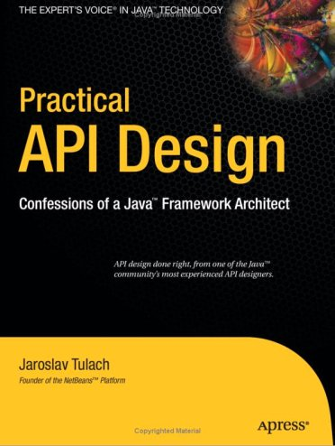

How To Design a (module) API
$Revision: 1.1.1.1 $
Read more in the newly published book

- Abstract:
- A description of good design practices when design any APIs with especially closer look to the case of an API based on NetBeans infrastructure is content of this evolving document.
Document History: available in CVS
- Why API?
- What is an API?
- The Importance of Being Use Case Oriented
- Life-cycle of an API
- Preservation of Investments
- Design Practices
Why API?
TheAPIstands for Application Programming Inteface and before we drill down to descriptions and suggestions how to write it, it is not unreasonable to analyze a bit the meaning of these words.
The word interface indicates that the API lives between at least two different subjects. For example the internal structure of the application could be seen on one side, while leaving foreing applications making calls into it on the on the other. Or there is the programmer (or team) developing the application and its API on one side and on the other the programmers using it. The important observation is that in both cases these two sides are separated - either compiled separatelly or developed in completely different groups with their own schedules, goals and needs.
It is exactly this separation that implies that rules for designing and maintaining an API. If there was no separation and the whole product was developed by tight team, build at once, there would be no need for bothering with API (as it is definitively more work) and also writing this tutorial. But as the real world products are composed from a set of independent projects developed by teams that do not necessarily know about each other, have completely different schedules and build their projects independently, but still want to communicate among themselves there is a need for a stable contract that can be used for such communication.
Example: Linux distributions are done by Mandrake or RedHat, but their content is composed from a thousands of independent open source projects. The producer of the distribution cannot influence their work, it just takes what is available and stable at given time, makes sure that everything works together and creates the release.
What is an API?
As the reason why API is used is to allow communictation between teams and applications in order to allow separated and distributed development the answer to questionwhat is APIshall include everything that influences such kind of development.
The API is everything that another team or application can depend on:
- method and field signatures - communication between applications
is usally about calling functions and passing data structures between
each other. If there is a change in the names of the methods, in their
arguments or in structure of exchanged data, the whole program often
does not even link well, nor it can run.
- files and their content - many applications read various files
and their content can influence their behaviour. Imagine application
relying on the other one to read its configuration file and modifying
its content prior to invoking the application. If the format of the file
changes or the file is completely ignored, the communication between
those applications gets broken.
- environment variables - for example behaviour of
cvscan be influenced by the variableCVSEDITOR. - protocols - opening a socket and being prepared to interpret
streams sent there, or putting or reading a data to clipboard or during
drag and drop again establishes an API that others can depend on.
- behaviour - a bit harder to grip, but important for the
separation as well is the the dynamic behaviour. How the program flow
looks like - what is the order of execution, what locks are being held
during calls, in which threads a call can happen, etc.
- L10N messages -
because the localization to a certain language is usually developed and
distributed by somebody other than the person that writes the code, yet both of
them have to use the same keys (
NbBundle.getMessage ("CTL_SomeKey")), there is inherently a contract between the writer of the code and the translator - an API of sorts.
The Importance of Being Use Case Oriented
It is often not hard to decide whether a program is good or bad - if it crashes without doing anything useful, it is bad. If the program cannot compile, it is even worse. But if it runs, helps to get a work done, just sometimes crashes, it is hardly good, but also it does not need to completely bad. The decision depends on the perception of the evaluator. The subjective feeling does matter. And the same applies when one tries to judge a design. It does not matter whether it is a UI design or API design. Again the personal perception is important.
On the other hand software engineering is (or at least should be)
done by engineers and important part of engineering is its measurability.
So the ultimate goal for reasoning about design is to make it
measurable, to suppress the subjective opinions and define set of
requirements that will be used to measure
the quality of
the design. Of course defining the requirements might need some
personal opinions, but as soon as they are written down, one can become
pure engineer and use pure scientific methods to measure how
much they are satisfied.
But as shown on the example of a good/bad program, the users subjective feeling is important. And it is important in design as well. But in case of API, which stands for the interface between the internals of an application and a programatic usage of its functionality, the person that will have the subjective feeling is the programmer using the API. He is the API user. He is the one that will judge the design and represent opinions whether it is good or bad. Of course, such opinions will be absolutely personal, based on personal experience gain during learning the desing and using the API. The easier is for the API users to make their job done, the better perception of the design they will get.
The external programmer is more concerned by the time needed to learn the API, by the amount of code needed to get his tasks done and by the stability of the contract. The art of making good API lays exactly in meeting these opposite requirements.
As usually one shall optimize for larger audience, for bigger effect. Usually the amount of people using an API is a way larger than those coding it, and that is why one shall take a special care to simplify the life of these users. Little uneasiness in implementing the application is acceptable, if the life of majority of users is simpler. To better address user needs it is necessary to know and understand their requirements. If an API allows easy implementation of the common tasks, it is a good API.
That is why the initial step in API design is to investigate and collect the scenarios for possible uses of the application. Having these use cases written down allows evaluation of each aspect of the API and validation of the design. The use cases serve as a fixed point to which one validates the design of API. It is practically impossible to jugde the quality of a design, but it is relatively easy to check whether the design satisfies required use cases or not.
Once a usecase becomes supported, it should stay supported until the end of the world (e. g. until it is not interesting anymore).
Life-cycle of an API
There seems to be two ways a feature can become an API (defining API as a stable interface that others can use over time without unpleasant surprises). An API can be evolved- spontaneously - someone is developing a feature, and another person finds it useful and starts to use it. Later they find out about each other, share their experiences and very likely find that the original design of the feature is not general enough or that it was never intended to be treated as an API In order to evolve it toward being an API they discuss changes to make the feature better and after few iterations it can become a useful and stable contract.
- by design - there is a known need for a contract between two components of the system. The requirements are collected, the problem area investigated, the use cases understood, and then someone designs and writes the API. Now others can use it in real world, comment, file bugs and enhancements which results in improvements to the API and finally evolve it into a state where it is a useful and stable contract.
In order to clearly communicate what stage an API is in, whether it is still being evolved, whether it is expected to ever be real API or whether it is stable and ready to use, let us introduce a system of stability clasification for APIs. The aim is to give the code authors way how to communicate their intention with particular feature and others to find out such information.
- Private is a category for features that are accessible
but are not intended for use outside of their component (module).
Such features are subject to change with every release and depending
on them is risky and should be avoided.
- Friend API is used for features accessible to specific
components in the system, that help to overcome the lack
of a real stable API, but are intended only for use between these
friend components and nobody else. Often friend
components are developed by the same group of people. A change to this
contract can be done every release, but owners of those friend
components must be notified in advance. No one else should depend
on such features - the author of this API does not have the intent
to create a general purpose API.
- Under development is a name for a contract that is
expected to become a stable API, but that has not yet been finished.
The current state serves as a proof of concept, and others are
encourage to try it and comment on a dedicated mailing list.
Incompatible changes may be done between releases, but should be rare,
not radical and properly announced on the mailing list.
- Stable interfaces are those that have received a final
state and the maintainers are ready to support it forever and
never change them incompatibly. The "forever" and "never" should
not be taken as absolute: It is possible to change the contract, but
only in major versions and only after a careful considerations and
in cases where it is imperative that a change be made.
Stable contracts should preserve the investments
of those entering into them (users of an API).
- Official are stable ones and also packaged
into one of NetBeans official namespaces:
org.netbeans.apiororg.netbeans.spiororg.openide. By packaging a contract into this package (and making it part of a release) one notifies others that the contract is stable - with all the consequence (except the conditional support for early adoptions - 7such modules has code base name that ends with with/0
). Also, the impact of possible incompatible changes to official API should be minimized by providing compatibility bridges and keeping binary compatibility even when source one is droped (see the preservation section). - Third party interfaces are provided by other parties
that do not follow the NetBeans rules and thus are hard
to classify. It is prefered not to expose such interfaces
as part of own contracts, in order to insulate users of
NetBeans APIs from unexpected changes made in the imported
interfaces.
- Standard is similar to the third party classification.
Also provided by someone out of NetBeans, but by someone
expected to evolve the interface in compatible way (for example
JSRs). The standard is expected
to not change frequently.
- Deprecated. After a while, nearly every API, regardless of what state it is, becomes obsoleted. Usually a new, better support for the same task has been developed which replaces the old API. In such case, mark the old API deprecated. A previously stable API that changed its stability to deprecated shall be supported for reasonable amount of time (a release) to communicate to users that they shall migrate from it to the new replacement. After that time the API can be removed from the product, while trying to preserve it for old clients by making it available in alternative ways (e. g. autoupdate centers).
Preservation of Investments
One of the most important things for NetBeans is fair treatment of our partners. Module authors, platform extenders, contributors and others have to be sure that their work will not vanish or break whenever a new release of NetBeans is announced. Their work has a right to be respected and admired. As long as NetBeans succeeds at that we can be sure that our partners will describe their experience to others and evangelize and evolve the NetBeans community.Because different parts of the system communicate with each other using public contracts (API, SPI, registration places, defined functional behavior), the way to preserve participants' investments is to always evolve these contracts in compatible ways. Each new version of NetBeans should make sure that it allows existing modules to execute and work in reasonable way, or, failing that, that it is easy to update existing sources to compile and use the contracts of the new release.
Maintained & unmaintained
Another reason why it is necessary that previous versions of modules continue to work is that often there is a module that works well and does an excellent job for its users, but in reality it is unmaintained. This can happen because the owner has left, works on different project or the company that created it does not exist anymore. There are even some projects on netbeans.org which are unmaintain but still serving their users well. If a new NetBeans version is released and introduces serious incompatibilities so the module fails to work, it is the authors of NetBeans who get blamed and shamed. That is why support for previously compiled modules is a necessary step: We must respect work that has been done and is currently unmaintained.On the other hand, the owner may still be alive, and want to bring their code up to date - for example, one of the reasons for changes to APIs is to improve performance, something any module author would want to take advantage of. This should be easy to do, requiring no work in most cases. However, even if great attention is paid to evolving the APIs well, in some cases updating may require a bit of work. If someone is maintaining a module, they are expected to make the necessary updates to the code to bring keep it in line with the current API set.
Examples
Even the biggest currently known change of behavior (the classpath change planned for 4.0) still allows a user to use a module developed against previous version of NetBeans and correctly use its functionality. If someone wants to use an old module, the only necessary thing is to setup the roots of filesystems to match the classpath.On the other hand, APIs are designed by human beings, and the best of APIs may still contain things that turn out later to be mistakes. One example of such a mistake is the Node.Cookie marker interface, which restricts the usability of Cookies and forces a dependency on the nodes package that is not strictly necessary. This interface should be removed. As such the Node.Cookie Node.getCookie (Class) method will be changed to Object Node.getCookie (Class). Even after the change it can be guaranteed that old modules will continue to run. On the other hand, the originally correct source code cannot compile anymore. It is observed that 99% of all uses of that method will continue to compile - like
MyCookie c = (MyCookie)node.getCookie(MyCookie.class);The remaining 1% of uses, which look like:
Node.Cookie c = node.getCookie(something);will have to be updated, but active module authors will do it gladly because they profit by having their classes become more flexible, and the change that must be done is very simple. Of course instruction for doing this update has to be prominent part of release migration guide.
Design Practices
Let's talk about actual Java design practices and patterns that help the writer and maintainer to achieve the general suggestions and rules that have been discussed in previous chapters and the make the user of an API feel comfortable, unsurprised and happy.Do not expose more than you want
Obviously the less of the implementation is expressed in the API, the more flexibility one can have in future. There are some tricks that one can use to hide the implementation, but still deliver the desired functionality. This section will discuss some of such tricks.Method is better than Field
It is better to use methods (usually getters and setters) to access fields than to expose them directly. The first reason is that a call to a method can do a lot of additional things, but in contrast an access to a field can only read or write the value. When using getters one can for example do lazy initialization, synchronize the access or compose the value using some computation algorithm. Setters on the other hand allow checks for correctness of assigned value or notification of listeners when the change happens.
The other reason why to prefer methods can be found in the Java Virtual
Machine specification. It is allowed to move a method from a class
to one of its superclasses and still remain binary compatible. So a method
initially introduced as Dimension javax.swing.JComponent.getPreferredSize(Dimension d) can
be deleted in new version and moved to
Dimension java.awt.Component.getPreferredSize(Dimension d) as
the JComponent is a subclass of Component (this
really happened in JDK 1.2). Such operation is not allowed for fields. Once
a field is defined in a class, it has to stay there forever in order to
keep binary compatibility. That is another reason why it is better to keep fields
private.
Factory is better than Constructor
It is more flexible to expose a factory method than to expose constructor. Once a constructor is available as part of an API, it guarantees not only that an instance assignable to a given class will be created, but also that the instance will be of the exact class (no subclasses allowed) and also that a new instance is created every time.If instead a factory method is provided (usually a static method that takes the same arguments as the constructor and returns instance of the same class the constructor is defined in), one has more possibilities. First of all one does not need to return the exact class, but some subclass - allows to use polymophism and possibly clean up the code. Second avantage is to cache instances. While in case of constructor new instance is created every time, the factory method can cache previously instantiated objects and reuse them in order to save the memory. Another reason is the possibility of proper synchronization when invoking the factory method which is not possible (at least is limited) in case of plain constructor. These are the reasons why one shall prefer factory methods over constructors.
Make Everything Final
In a lot of cases people are not designing for subclassing and still they do not prevent it. If you are writing an API and you explicitly do not want people to subclass or implement your interfaces (also see paragraph about API vs. SPI) it is better to disallow that.
Simplest solution is to make your class final. Other tricks
include non-public constructors (one shall do it anyway in favor of
factory methods) or
making all (or at least most) methods final or
private.
Of course this works only for classes, if you decide to use interfaces you cannot forbid foreign implementations on the level of virtual machine, you can only ask people in JavaDoc not to do it.
Allow access only from a friend code
Another useful technique to not expose too much in API is to give access to certain functionality (e. g. ability to instantiate a class or to call a certain method) just to afriendcode.
Java by default restricts the friends of a class to those classes that are
in the same package. If there is a functionality that you want share just
among classes in the same package, use package-private modifier
in definition of a constructor, a field or a method and then it will remain
accessible only to friends
.
Sometimes however it is more useful to extend the set of friends to a wider range of classes - for example one wants to define a pure API package and put the implementation into separate one. In such cases following trick can be found useful. Imagine there is a class item (btw. also you can also check out sources from CVS):
public final class api.Item { /** Friend only constructor */ Item(int value) { this.value = value; } /** API method(s) */ public int getValue() { return value; } /** Friend only method */ final void addListener(Listener l) { // some impl } }that is part of the API, but cannot be instanitated nor listened on outside of the friend classes (but these classes are not only in api package). Then one can define an
Accessor in the non-API
package:
public abstract class impl.Accessor { public static Accessor DEFAULT; public static Accessor getDefault() { if (DEFAULT != null) { return DEFAULT; } // invokes static initializer of Item.class // that will assign value to the DEFAULT field above Class c = api.Item.class; try { Class.forName(c.getName(), true, c.getClassLoader()); } catch (ClassNotFoundException ex) { assert false : ex; } assert DEFAULT != null : "The DEFAULT field must be initialized"; return DEFAULT; } /** Accessor to constructor */ public abstract Item newItem(int value); /** Accessor to listener */ public abstract void addListener(Item item, Listener l); }with abstract methods to access all
friendfunctionality of the
Item class and with a static field to get the accessor's
instance. The main trick is to implement the Accessor by a
(non-public) class in
the api package:
final class api.AccessorImpl extends impl.Accessor { public Item newItem(int value) { return new Item(value); } public void addListener(Item item, Listener l) { item.addListener(l); } }and register it as the default instance first time somebody touches
api.Item by adding a static initializer
to the Item class:
public final class Item { static { impl.Accessor.DEFAULT = new api.AccessorImpl(); } // the rest of the Item class as shown above }Then the friend code can use the accessor to invoke the hidden functionality from any package:
api.Item item = impl.Accessor.getDefault().newItem(10); impl.Accessor.getDefault().addListener(item, this);
Please note that in NetBeans this is very useful in combination
with specifying publicly accessible packages in module manifest
(OpenIDE-Module-Public-Packages: api.**) and thus disallowing
on the class loading level other modules from accessing the
impl.Accessor.
Separate API for clients from support API
Are there really more types of API? If so, how do they differ? Do the users of those types differ? Do they have different expectations? Those are questions that shall be answered in the first part of this section. Then we will try to define the restrictions on evolution of different types of API, and present some tips, tricks and lessons learned, which one can use to achieve and enforce such restrictions.The Client vs. Provider API
Before we start, we should ask a question: Who is the client and who is the provider? Let us do it on an example of XMMS, the media player for UNIXes (called WinAmp on another platform).
The player can play audio files, can skip to next
song, return to previous one, offers a playlist with possibility to
add, remove and reorder songs. The functionality is provided for
users, but accessible to other programs as well. So a program can
call xmms.pause() or xmms.addToPlaylist(filename).
As can be seen, the communication is initiated
by the other program that uses the player's API to instruct it to
perform an action. After the execution of the command ends, the
control returns back to the caller. Let's name the caller a client and
such an API a client API.
On the other hand, the XMMS' APIs also allows third parties to
register
output plugins. The functionality
of the default player can be extended by providing a utility method that writes the
played data to a disk, broadcasts it over a network, etc. The
communication is in this case initiated by the player itself. After
collecting enough data for playback, the program locates the current
output plugin and sends it the data to process:
plugin.playback (data). After finishing the playback
the execution is returned back to the player that can continue in
gathering more data and the whole process continues. Is the plugin
a client? Well, it is in completely different position than the
client in previous paragraph. It does not instruct XMMS
to do something, it increases the list of things XMMS can do.
So no, the plugin is not a client.
XMMS ability to register plugins is a
Service Provider Interface, or SPI.
Expressing API/SPI in C and Java
In this section we will discuss the actual implementation of the API in two sample languages - procedural C and object oriented Java.The C language is ready and suitable for expressing (client) API. One just writes the methods and announces them in the header files, so others can compile agaist them:
void xmms_pause(); void xmms_add_to_playlist(char *file);The Java way is not much different:
class XMMS { public void pause(); public void addToPlaylist(String file); }but one has more choices. It is possible to declare these methods static, to leave them as instance methods, make them abstract, final, etc. But generally speaking, the way C and Java handle client APIs is nearly similar. However the situation is a far different when writing an SPI.
In order to write own plugin for XMMS in C one has to start with a method that will do the playback. So the a plugin must define:
void my_playback(char *data) { // do the playback }and the player itself has to have some registration method, for example,
void xmms_register_playback((void)(f*)(char*));that the plugin should call to register itself.
xmms_register_playback(my_playback) and its playback function
is then called by the XMMS whenever necessary. In Java the
contract starts with a
definition of playback interface:
interface XMMS.Playback { public void playback(byte[] data); }then my plugin has to implement that interface
MyPlayback implements XMMS.Playback and register that
instance to the player:
XMMS.registerPlayback(new MyPlayback());and that is all. The player can do its calls to the plugin as it could in case of C. The major difference is that writing this kind of code is taught in Java courses without a proper explanation of what it really means.
In the C case, the amount of work to produce an SPI (for example callback) is high enough to prevent beginner from even trying it. One's knowledge has to grow significantly to get to state when one can (or will need to) design an SPI. But in Java any declared method that is not private, final or static is defacto an invitation for someone to provide a callback and thus an accidental SPI. This is often not well understood by programmers, teachers, and is not part of conventional wisdom. Any Java book introduces public, non-static and non-final methods in one of the first chapters (at least as soon as it starts to talk about Applets) without a proper warning of all consequences. That may be fine for simple development, but when one starts to design APIs, all habits learned at the begining turn into mistakes.
Evolution of API is a different process than evolution of SPI
Evolution is a natural part of any contract. After a time everything gets obsoleted, insufficient or broken. APIs and SPIs are not exceptions. So it is better be prepared for evolution at the begining, plan for it and avoid mistakes that would otherwise be hard to undo.In case of an API that is offering methods to clients, there is no problem with additions. Extending the functionality to offer more functionality to clients cannot hurt them - if they do not want they do not need to use it.
In the cas of an SPI, the situation is exactly the oposite. Adding new method into an interface that others must provide effectively breaks all existing implementations, because they do not implement it! On the other hand it acceptable and valid to stop calling (de facto removal) a method from an SPI. If the operation flow is not part of the contract, not calling one method should not break anything.
So the way of evolution depends on the type of the interface: API additions are fine but removing functionality is not; SPI de-facto removals are allowed, but additions are not. At the begining of producing a contract, one should realize and understand which parts will be API that clients will call, and what will be SPI that will extend the functionality one is writing. The biggest mistake that one can make is to mix API and SPI together into one class. Then there is no room for evolution. Adding a method is forbidden because of the contract for SPIs and removing because of the contract for APIs. Always separate API and SPI.
Example
As an example let us chooseDataObject class, a part of the
Data System API. It is used for by clients to obtain a logical,
representation of a file or set of files, and logically manipulate
their contents:
// locate a data object DataObject obj = DataObject.find(fo); // move it to different place obj.move(destination); // try to open it if supported OpenCookie o = (OpenCookie)obj.getCookie(OpenCookie.class); if (o != null) { o.open(); }But the problem is that this client API is mixed together with a lot of methods provided just for subclasses (those that are protected in javadoc ). They pointlessly clutter the API and moreover prevent the API from being extended in future. Moreover not only do the API and SPI conflict and make evolution difficult, but the execution flow between API and SPI resulted in a lot of flow clashes - deadlocks.
That is why during design of
new data systems
the DataObject has been reserved just for the API. It is
supposed to be final and fully controlled by the implementation. The
actual behaviour is provided by a separate SPI:
interface DataObjectOperator { // delegated to from DataObject.move(DataFolder df) public void move(DataObject obj, DataFolder target); // delegated to from DataObject.rename(String name) public void rename(DataObject obj, String name); // delegated to from DataObject.getCookie(Class clazz) public Object getCookie(DataObject obj, Class clazz); // etc. }By separating the API from SPI and fully controlling the flow between them we can evolve the API and SPI independently and moreover add various pre-condition and post-condition checks between the actual client and provider. For example it is simple to add a new method
DataObject.move(DataFolder df, String
newName) to the API that should move the object and
rename it at once and bridge it as move and
rename calls into the DataObjectOperator by
default and (in case of of new improved operators) to the new method
moveAndRename(DataObject obj, DataFolder df, String name)
if provided.
The new data systems should be an example of good design that is aware that what's good for SPI implementors isn't necessarily good for API clients, tries to give the API a chance to evolve and also restrict SPI implementors as little as possible.
Another example in case you are not yet convinced:
AntArtifact
was originally made an abstract class, rather than an interface, so that some final methods like
getArtifactFile and getScriptFile could be added for clients, and
getID could be defaulted. It seemed reasonable at the time. Of course, it turned out that later
the SPI part had to be extended to support multiple artifacts and properties. Adding support for properties
was easy enough to do compatibly, but adding support for multiple artifacts was messier: we had to deprecate the
old single-artifact getters and introduce new getters, while preserving compatibility for old implementations.
It would have been simpler to do had there been a final class AntArtifact with a factory method
accepting an SPI interface AntArtifactImpl (or the like), since we could have produced a new SPI
interface and a new factory method.
Interfaces vs. abstract classes
There seems to be long, never-ending flame war between those who prefer the strict use of interfaces and those who like abstract classes. Such discussions continue forever, starting usually every few months again and leading nowhere, because people tend to hold to their opinions. Often such discussions start with no common ground - no agreement on use cases or requirements. Below we will look at the problem from use case point of view.The Advantages of Interfaces
The most obvious one is that usage of the type, if implemented as an abstract class, is limited as java doesn't allow multiple inheritance of classes. This only becomes a problem when a type is huge, or when it significantly enhances developer productivity to be able to subclass and reuse a base implementations. We will call these support classes, where one is expected to subclass and reuse a base class's implementation.The second advantage of interfaces is that there is an enforced separation between the API and the implementation. But this can be achieved with abstract classes too, with a bit of self control, while in interfaces that is enforced by the compiler.
The Advantages of Abstract Classes
The main reason why people prefer to use abstract classes is their ability to evolve in a time - it is possible to add a new method with a default implementation without breaking existing clients or implementors (here we talk about runtime compatibility, not compile time one). Interfaces lack such functionality, so it is necessary to introduce another interface to provide future extensions. So you end up with a lot of interfaces such asinterface BuildTargetDependencyEx extends BuildTargetDependency
with additional methods.
The original interface is still valid, the new one is available.
A second very useful feature of abstract classes is the possibility of restricting access rights. Every method in a public interface is public and everybody can implement the interface. That for example means anybody can implement such interface, but in real life, one often wants to restrict that and have the creation under control. Interfaces lack such restrictions.
Another thing that is possible with abstract classes is that they can contain static methods. Of course that with interface one can create separate classes with factory methods, but the truth is that a class is usually the most natural and reasonable place for factory methods that return instances.
Use cases
Let's now give few real world examples and discuss whether the use of one or the other approach has some benefits and why.TopManager
The TopManager is one of the oldest types in the NetBeans Open APIs and was designed to bridge between theorg.openide.*
packages and their implementation in org.netbeans.core.
There is just one instance of the manager (provided by the core) and clients
of the API are not at all expected to extend/implement that type.
Analysis shows that this is a typical situation of providing a lot of utility methods to clients with complete control over the implementation, where attention is be paid to ease of use for clients of such API, while permitting dynamic discovery of the implementation (the API is in different compilation unit [openide] than its implementation [core]).
This is a situation where one cannot gain any advantage by using interfaces over using abstract classes. One needs a factory method, one can add new methods, separation between API and implementation is in the right hands and there is also the possibility to prevent instantiation of other instances than the default one. If you happen to be in similar situation, it is best to use an abstract class.
An example what can happen if one chooses to use an interface is
located next to TopManager in the same package - the
Places
interface. In reality it is the same singleton as the
TopManager, it is accessed via the factory method TopManager.getDefault().getPlaces().
All its methods could be part of the TopManager as well.
We just wanted to logically separate them and we did it using an
interface. As a result, as newer "places" that might be useful
API were created, we were afraid to add a method there after a time.
Since we decided creating a Places2 interface would be
overkill, the interface started to be less and less used and now is nearly
obsolete.
Cookies
The cookies are a coding pattern that allows any object to provide a specific feature (called cookie) by calling:OpenCookie openCookie = (OpenCookie)anObject.getCookie(OpenCookie.class); if (openCookie != null) { openCookie.open(); }Should the
OpenCookie be interface or abstract class?
Simple analysis can show that there is a lot of clients, users of the
API, and also a lot of providers, often wanting to provide more cookies
at once. Moreover the cookie itself contains just one method
open. All of the that leads to answer that the type should be
an interface. We have the ability for multiple inheritance, and there is
no fear of evolving the interface because it has just one method that
does it all, no need for static factory methods, no need to prevent
subclassing. Thus an interface is the right choice.
Very similar, but also very different example can be shown on another
cookie - the
InstanceCookie
. It is also an interface and it used to have three methods
but after few releases we realized a need for another to
improve performance. So we were forced to introduced a subclass
InstanceCookie.Of extending InstanceCookie
and adding method instanceOf. This of course works, but
adds a lot of pressure to users of the interface. Everyone using the API has
to code as following:
boolean doIAccept; InstanceCookie ic = (InstanceCookie)obj.getCookie(InstanceCookie.class); if (ic instanceof InstanceCookie.Of) { doIAccept = ((InstanceCookie.Of)ic).instanceOf(myRequiredClass); } else { doIAccept = ic != null && myRequiredClass.isAssignableFrom(ic.instanceClass()); }The code is not too simple and moreover is spread over the whole codebase. How much simpler it would be if we could just add a new method into the cookie:
boolean isInstanceOf(Class c) { return c.isAssignableFrom(instanceClass()); }but because java does not allow default methods in interfaces, we are out of luck. Should we have used abstract class? No, we should not, the use cases are similar as with
OpenCookie, but there is
another trick that (very likely) should have been used.
Instead of adding three methods into the interface we could add just one that would return a class with all necessary information.
interface InstanceCookie { public Info instanceInfo(); public static class Info extends Object { public String intanceName(); public Class instanceClass(); public Object instanceCreate(); } }This solution seems to combine the best of both worlds. Clients have simple API, providers can implement instead of extend and in the
instanceInfo method instantiate the info either
with some provided constructor or factory methods or lazily using subclassing.
Also when
we need to add the instanceOf after few releases,
we can. InstanceCookie.Info is a class and as such
can be extended by a method with a default implementation.
Of course to make such methods additions safe, it is better to
make the class final and provide factory methods that implementors
of InstanceCookie could use. Those factory methods
could either be simple, e.g. take values for instanceName,
instanceClass and instanceCreate methods.
Or the factory methods could take another interface with a methods
that would be called to lazily handle the invocations of for example
Info.instanceCreate. The actual solution depends on
the needs of the users of the API.
Please notice that similar pattern is used by java listeners. Every listener is an interface and as such it has a constant (often one) number of methods. But each method takes a subclass of EventObject which is a class and if necessary can be enhanced with a new method.
FileObject
Another example from NetBeans is the FileObject (part of the filesystem API). This type usage seems very close to the TopManager example (but is not as obvious): There are very few people directly subclassingFileObject (javadoc's
HttpFileSystem, Kyley and Niclas) and tons of client API users (every
NetBeans module).
The amount of people directly subclassing
FileSystem
is the same as those doing that for FileObject, so it seems
fine to choose abstract class for both types, but it is true that the
filesystem would probably work as interface too.
Moreover there is a support class, the AbstractFileSystem that most of the people providing filesystem implementations are subclass. Because it is a support class, it needs to be a concrete class or at least a factory method, but it offers five interfaces (Info, Change, Attr, List, Transfer) that are not exposed in the client API for users of filesystems, but users of it may implement to write an filesystem implementation. People who write the own filesystem implement these interfaces most of the time and can use multiple interface inheritance. And because AbstractFilesystem implements the client API contract, anyone subclassing it can be sure they are implementing the full API, but only that API.
CloneableEditorSupport
Can support classes be provided as interfaces? It is not easy. What kind of support would it be if one would have to provide implementation of each method! So, often abstract classes are used as base for support classes.
But one should carefully separate the support classes from the
actual API (as the CloneableEditorSupport is in different
package than the
EditorCookie
which it implements). Such separation ensures basic quality of design and
prevents cheating - one needs to use just API methods even in the
implementation and cannot rely on non-public hooks.
Interfaces or Classes?
Is it better to use interfaces or a classes? None, could be simple answer to such general question. But if try to get down to the roots of the question we can get a better answers.
First of all only those people that are designing an API that will be maintained for a while, have to care. Those who are writing code to pass an exam do not need to. They can choose whatever they wish.
Second necessary thing is to treat users of your API well. If you do not care about them, do not care about the interfaces or classes question.
If these conditions are satisfied then, from the discussion above, one can see that classes are better for client API and interfaces for service provider API. So if you know that most of the users of an API will just make calls to it, it is better to use classes (and the best thing is to make them unsubclassable, that way one prevents accidental subclasses at all). If you want people just to subclass. Then choose interfaces, they are more safe and easy to use when subclassing. If your case is somewhere in between (which should be prevented according to separation paragraph) the choice is up to you, but carefully judge what people will do more often. You will not be sorry.
Case Study of client API and SPI separation
The previous example withCloneableEditorSupport claims
that it is not easy to write support without classes, but the truth is
it is not that complicated and moreover it really separates the
SPI from the client API and allows easier and safe future evolution. Here is
a sample rewrite of CloneableEditorSupport stuff using
interfaces:
The main goal of
CloneableEditorSupport
is to implement some
interfaces
OpenCookie,
EditCookie
and
EditorCookie
while letting the subclasses override abstract methods like
String messageName (), String messageModified ()
and String messageOpen () and provide and modify the
behaviour of the abstract class. For implementation these
methods the subclass can call some support functions like
protected final UndoRedo.Manager getUndoRedo() and
communicate with the superclass implementation using for example
protected Task reloadDocument(). The whole already
enough complex situation is additionally complicated by a fact
that nearly every method can be overriden by a subclass
which creates operating environment so wild that nobody can
guess what combinations are possible and makes future evolution
nearly impossible.
Move Protected Methods Into Interface
The situation might be simplified by separating all methods that should be overriden in subclasses into own interface:public interface CloneableEditorProvider { // methods that have to be overridden // in order for the functionality to work public String messageName(); public String messageSave(); // additional stuff described below }and having a factory method
EditorCookie EditorFactory.createEditor(CloneableEditorProvider p);that would convert the service provider interface into the desired client API (this is a bit simplified, the real API would have to support creation of multiple cookies
OpenCookie,
EditCookie, etc. for example by having additional argument
of type Class[] that would specify all cookies the returned
value should implement). Functionally this is equivalent to providing a class with
abstract methods that should be implemented in subclasses, however
in addition,
it guarantees that nobody will be able to cast EditorCookie
to CloneableEditorProvider and call some special methods on
it because the createEditor method has to create new
object for its result that bridges its functionality to the provider.
Passing Notifications to Implementation
But the current state does not yet fully emulate the functionality of the oldCloneableEditorSupport - the provider is not
able to invoke reloadDocument or any similar one. In order
to address this, let's enhance the interface:
public interface CloneableEditorProvider { // the getter methods as in previous example public String messageSave(); // the support for listeners public void addChangeListener(ChangeListener l) throws TooManyListenersException; public void removeChangeListener(ChangeListener l); }Now the factory methods will not just build an implementation of
EditorCookie, but will also attach such implementation as
a listener to the provider. As there will always be at most one
listener, the method signagure throws
TooManyListenersException to signal that the provider
can implement the method in the most simple way:
private ChangeListener listener; public void addChangeListener(ChangeListener l) throws TooManyListenersException { if (listener != null) throw new TooManyListenersException(); listener = l; }and does not need to bother with support for multiple listeners, while following the JavaBeans conventions. Whenever the provider needs to reload the document, it can just fire
listener.stateChanged (ev) and the listening implementation will
know that the reload of the document is requested.
Callbacks to Implementation
The listener approach allows simple communication flow from the provider to the implementation when needed, but there is still something missing - ability to obtainUndoRedo via CloneableEditorSupport.getUndoRedo.
In order to achieve that we might change the interface once more:
public interface CloneableEditorProvider { // the getter methods as in previous example public String messageSave(); // the support callbacks public void attach(Impl impl) throws TooManyListenersException; // the class with methods for communication with the implementation public static final class Impl extends Object { public void reloadDocument(); public UndoRedo getUndoRedo(); } }We have replaced the listener with a special
Info that
contains all the methods that the provider can call on the
implementation and added a method attach to allow
registration of that class to any provider.
This is the final state. Everything that is supposed to be called
from the implementation is in the CloneableEditorProvider
interface, everything that is supposed to be called by a clients
is not avaible as EditorCookie and is completelly
under control of the EditorFactory and the callback
communication from the provider to the factory is separated into
the CloneableEditorProvider.Impl. This state can
at first sight look more complex than the original
CloneableEditorSupport, but it is much clearer and
separates the concerns comparing to the original mess in the support.
Extensible Client Behaviour
Anybody wants to add new user method or functionality intoEditorCookie?
Why not, just enhance the EditorFactory to create better
implementation in its factory method. Is there a need to log requests
from clients? Again, EditorFactory is the right place
to do it. Necessary to provide some synchronization, deadlock
prevention, etc? Where else then in EditorFactory.
Extensible Communication betwen provider and implementation
As we have carefully choosen theCloneableEditorProvider.Impl
to be final class, we can always add a new methods to it. For example:
public static final class CloneableEditorProvider.Impl extends Object { public void reloadDocument(); public UndoRedo getUndoRedo(); public void closeDocument(); }as far as we teach the implementation to understand what
closeDocument means.
Btw. actually the Impl
acts as a client API for the CloneableEditorProvider
and that is why it is better to make it class.
Extensible Provider Evolution
It is often common that after a while the functionality of theEditorCookie might be improved, if the
CloneableEditorProvider was a bit more capable. In the
original CloneableEditorSupport example this would be
solved by adding new (protected) method with default implementation
in the CloneableEditorSupport, but as adding a method is always a bit dangerous
(might introduce clashes - what used to compile in previous version
need not compile anymore, or need not run anymore). The provider
approach presented in this case study allows us to define
interface CloneableEditorProvider2 extends CloneableEditorProvider { /** Will be called when the document is about to be closed by user */ public boolean canClose(); }and (possibly) new factory method (possibly because the original method taking just
CloneableEditorProvider could be enough)
EditorCookie EditorFactory.createEditor(CloneableEditorProvider2 p);that will use the new interface for better implementation of the editor while keeping the same interface for client API.
Another example of this kind of evolution can be observed in a situation when the old provider interface is completely wrong and we want to replace it, or enhance the amount of choices be completely new:
interface PaintProvider { public void paintImage(Image image); } /** Based on a ability to paint creates new EditorCookie */ EditorCookie EditorFactory.createEditor(PaintProvider p);In spite of that the service provider API has changed completely, the whole change is hidden in the factory that translates the calls between old client API to the new provider interface. Moreover there is no clash in evolution. Providers that really wishes to provide
CloneableEditorProvider do that by implementing directly
that interface, providers that want to handle the
closeDocument call as well do that by implementing
CloneableEditorProvider2 and those that rely on the
completely new paint style implement PaintProvider.
Each of such providers explicitly specifies what SPI contract it wants
to implement, this is much clearer than the possible mess with original
evolution of CloneableEditorSupport based on adding
methods to it.
Using games to Improve API Design Skills
Having good API design skills is very important for people who work and create an open source framework like NetBeans. It is indeed fine to read and study some API design guidelines, however there is no better learning approach than practicing the design in a situation simulating the reality. Read the article about API Fest to learn about the game called API Fest that the NetBeans core team created and played as part of improving their design skills.
Comments or suggestions how to enhance this document send to nbdev@netbeans.org mailing list please.